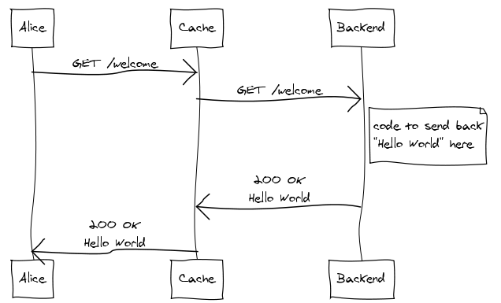
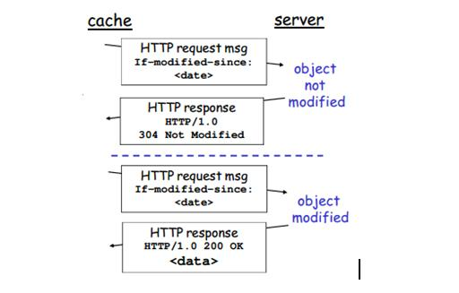

HTTP-304 Conditional Caching
Increasing Application Performance with HTTP Cache Headers
by Simar Singh

Performance
- Built - Algorithms / Big 0 | Linear vs Binary Search
- Fueled - Compute, Memory, Disk | Single vs Multi Core ...
- Tuned - GC Tuning, VM Args Heap -Xmx -Xms Suriver Ratio etc
Sometimes we and get it by Default
Don’t just turn off the cache. Let browser handle the HTTP Request cache-control Headers
GET /welcome/ HTTP/1.1 If-Modified-Since: Mon, 26 Jul 1997 05:00:00 GMTCache-Control: no-cachePragma: no-cache
Who is turning OFF the HTTP cache? Most often it's not Client side
- Alice the User doesn't know about cahcing or even HTTP. She is just using her Chrome Browser
- Or if she left Caching disabled in Chrome Dev Tools?
- Alice the Developer without any need is disabling the HTTP Cache client side code or script
GET /welcome/ HTTP/1.1 If-Modified-Since: Mon, 26 Jul 1997 05:00:00 GMTCache-Control: no-cache no-storePragma: no-cache
Server Side is likely turning HTTP Caching OFF. But How and Why?
By default, Spring Security sets specific cache control header values for us, without us having to configure anything such that browser will never cache HTTP responses
@Configuration
@EnableWebSecurity
@EnableGlobalMethodSecurity
public class SpringSecurityConfig extends WebSecurityConfigurerAdapter {...}
@GetMapping("/default/users/{name}")
public ResponseEntity getUserWithDefaultCaching(@PathVariable String name) {
return ResponseEntity.ok(new UserDto(name));
}
The resulting cache-control header will look like this:
[cache-control: no-cache, no-store, max-age=0, must-revalidate]
Though inefficient, there is actually a good reason for this default behavior –
If one user logs out and another one logs in, we don’t want them to be able to see the previous users resources.
It’s much safer to not cache anything by default, and leave us to be responsible for enabling caching explicitly.
More...
Conditional Get
Cache Coherency with Etag (content hash) | With If-modified-since (timestamp)
GET /api/auth HTTP/1.1 HTTP/1.1 200 OK Cache-Control: no-cache no-store Pragma: no-cache
GET /api/welcome.json HTTP/1.1 If-Modified-Since: Mon, 29 Jun 2018 02:28:12 GMT HTTP/1.1 304 Not Modified Cache-Control: private max-age=0, must-revalidate Content-Type: text/json
GET /asset/welcome.html HTTP/1.1 HTTP/1.1 200 OK Cache-Control: public max-age=3600, must-revalidate Expires: Fri, 30 Oct 1998 14:19:41 GMT Last-Modified: Mon, 29 Jun 1998 02:28:12 GMT ETag: "3e86-410-3596fbbc" Content-Type: text/html
Cache but ensure Browser must revalidate before use
Browser will compare it with the server's version by sending the contents of Last-Modified or ETag, as you wanted.
max-age=0 in Cache-Control header froces browser to recheck your cached-response with the server.
must-revalidate in Cache-Control header says that the cache may not serve this content when it is stale (i.e. "expired"), but must revalidate before that. Yes, caches (and browsers) can in theory be set to serve pages even if they are stale, though the standard says they should warn the user if they do this.
no-cache used to be that you could add instead, but as users have been expecting this to behave as no-store, browsers are gradually treating them the same.More...
Surprise....Yes it works in IE 6+
More...Why is HTTP Response Caching Important?
- Improve User Experience with Incresed Speed and Responsive
- Save Cost over unecessary Data Transfer
- Save Hardware Resources | (Compute, Memoery and Disk/DB Access)
- We cannot control how our clients will access our applications over the Internet
- Many of Clound Native Solutions are sharing resources. Pay per use
- ISPs are Monetizing over Usage not just
connectivity
Governed by HTTP standard; Browser / Agents have gone through decards of evolution to make it work by defaultMDN | HTTP Conditional Get HTTP/1.1 RFC, section 14.9 Spring HTTP ETags Spring HTTP Last Modified